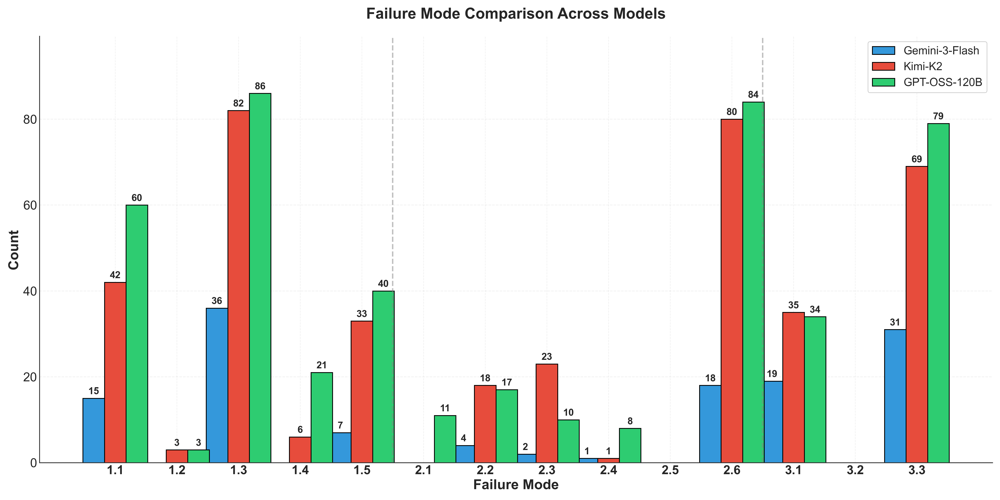
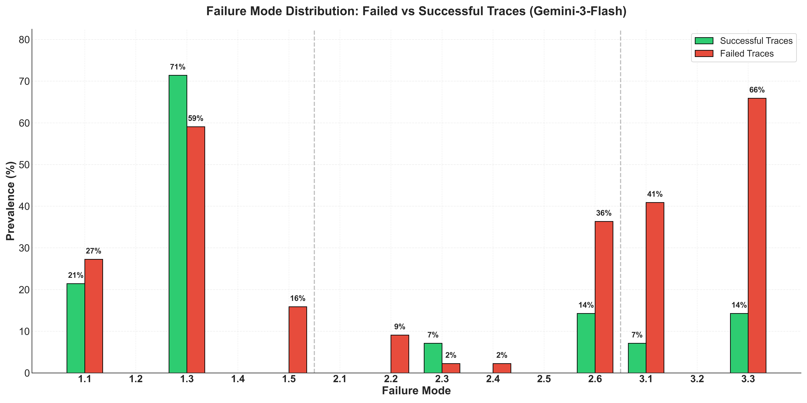
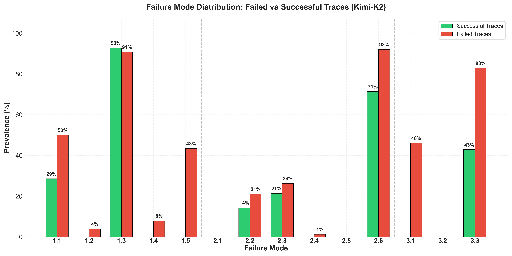
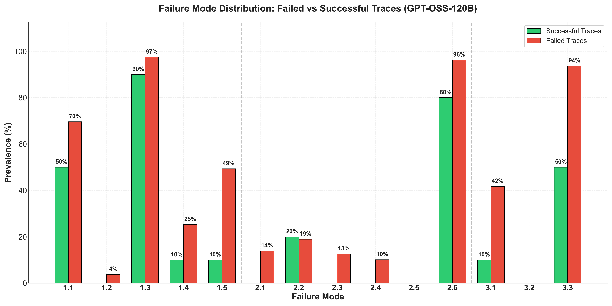

MAST case study
Why Do Enterprise Agents Fail? Insights from IT-Bench using MAST
December 2025
“All successful task are alike; every unsuccessful task is failing in its own way.” (Berkeley ‘25 — after “Anna Karenina”, Lev Tolstoy)
The "Black Box" Problem of Agent Benchmarks
Benchmarks like ITBench are becoming the standard for measuring agentic performance in high-stakes IT automation tasks. In ITBench, agents act as Site Reliability Engineers (SREs) or Security Analysts tasked with diagnosing Kubernetes outages, patching vulnerabilities, or managing cloud costs in production environments.
This benchmarks use success rate as a main metric to evaluate agents. However, this metric is insufficient for engineering robust systems. Knowing that an agentic system achieves a 14% success rate on ITBench tells us that it failed, but not why: Did it fail because it forgot the context? Because it hallucinated a command? Or because it simply did not terminate?
Without a comprehensive approach to diagnose these failures, developers are left guessing, often resorting to blind prompting tweaks that solve one problem only to create another.
MAST: A Diagnostic Tool for Agents

As a new standard to analyze the failure modes of complex agentic systems, we developed MAST (Multi-Agent System Failure Taxonomy). MAST brings more insights and open up the opaque evaluation of these benchmarks. Derived from a rigorous analysis of over 1,600 traces across seven different frameworks, MAST provides a standardized taxonomy for agent failures.
MAST converts unstructured execution logs into structured "failure vectors" based on 14 distinct patterns across three key categories:
- FC1: System Design Issues (The "Skeleton")
- Failures here stem from the agent's architecture and role definition.
- Examples: FM-1.3 Step Repetition (looping), FM-1.4 Loss of Conversation History (memory leaks), FM-1.5 Unaware of Termination (failing to stop).
- FC2: Inter-Agent Misalignment (The "Communication")
- Failures arising during runtime from how agents talk to each other or the environment.
- Examples: FM-2.2 Fail to Ask for Clarification (assuming instead of asking), FM-2.3 Task Derailment (going off-topic).
- FC3: Task Verification (The "Quality Control")
- Failures in quality assurance of the agents' output.
- Examples: FM-3.1 Premature Termination (giving up too soon), FM-3.3 Incorrect Verification (hallucinating success).

The Experiment: Diagnosing ITBench Agents
We stress-test the idea of using MAST to make agent evaluations actionable and gain insights on the failure modes by applying it to ITBench, a popular evaluation suite for IT automation tasks across SRE, Security/Compliance, and FinOps.
We annotated 310 ITBench SRE execution traces produced by an SRE agent built with Codex in realistic environments. These traces capture natural language interactions between agents and their tools across three models representing different capability tiers: Gemini-3-Flash, Kimi-K2, and GPT-OSS-120B. This lets us look past simple success metrics and investigate the distinct failure signatures driving these results. For this we use the recall scores, as the models by design only output a maximum of 3-5 outputs and SREs prefer the recall scores over F-1 score.
- Gemini-3-Flash: 100 traces (75.5% Mean Recall)
- Kimi-K2: 105 traces (28.6% Mean Recall)
- GPT-OSS-120B: 105 traces (12.4% Mean Recall)
Below, we detail the findings from this diagnostic analysis.
Finding 1: Stronger models like Gemini-3-Flash shows surgical (isolated failure modes) per trace whereas open sourced Kimi-K2 and GPT-oss-120b show compounding failure patterns
When we examine the failed traces, a clear hierarchy of complexity becomes apparent across the three models. This is measured by the number of distinct failure modes observed per failed run.
- Gemini-3-Flash: 2.6 failure modes per failed trace
- Kimi-K2: 4.7 failure modes per failed trace
- GPT-OSS-120B: 5.3 failure modes per failed trace
This disparity in failure mode density reveals a fundamental difference in how these systems break down. Gemini-3-Flash exhibits a surgical failure profile. Even in unsuccessful runs, it maintains high internal coherence and typically fails due to a single isolated failure, such as an incorrect verification step. These failures are precise and far easier to diagnose.
On the opposite end of the spectrum, GPT-OSS-120B suffers from cascading collapse. In these traces, we observe that errors tend to compound over time. A small reasoning mismatch early in the process often leads to a deviation from the task specification, which in turn triggers a total derailment of the agent. Kimi-K2 represents the middle ground, where failures are more frequent and complex than the frontier model but do not reach the systemic instability seen in the 120B open weights model.
The significance of this finding is that a higher success rate is often accompanied by isolated failure. Systems that fail with fewer simultaneous problems are far more predictable and simpler to improve through targeted engineering interventions.

Finding 2: "Non-Fatal" vs. "Fatal" Failures
Perhaps the most critical insight from MAST is distinguishing between failures that the system can tolerate versus those that are fatal to success of the downstream task. By comparing the distribution of failure modes in Successful Traces vs. Failed Traces, we can classify them into three categories.
The "Non-Fatal" (Benign) Flaws
Across all three models, certain failure modes appear frequently even in runs that ultimately succeed. These are often structural frictions rather than terminal bugs.
- FM-1.3 Step Repetition: This mode is present in over 90 percent of successful Kimi-K2 runs. In the SRE domain, iteration is often a necessity. An agent might query the same metric multiple times to verify if a service is stabilizing or if a fix has taken effect. Gemini-3-Flash actually shows less repetition in its failed traces, suggesting that it sometimes fails because it does not iterate enough.
- FM-1.1 Disobey Task Specification: Agents frequently deviate from strict tool formatting or sequential instructions yet still manage to identify the correct root cause.
This separation is where MAST proves its value. It allows us to ignore the bening failures like repetition that often occurs in troubleshooting, and focus instead on fatal failures that killed a run.
The "Fatal" Flaws
Certain behaviors strongly separate success from failure. When these modes appear, the probability of a successful outcome drops precipitously. The most prominent example is FM-3.3 (Incorrect Verification). This mode shows a 52 percent increase in failed Gemini-3-Flash traces compared to its successful ones. Other prominent failure modes are 1.5 (Unaware of Termination Conditions) and 2.6 (Reasoning Action Mismatch).
If these happen, the run is likely dead; guiding practitioners to develop robust context management strategies across agents in the system and multiple turns of interactions.
Case Study: Gemini-3-Flash (Decisive but Overconfident)
Gemini-3-Flash is highly efficient, but its primary bottleneck is its tendency to assume success without rigorous proof. Its failure signature is dominated by a massive delta in verification errors. It often identifies the correct signals but terminates before cross-referencing them against the ground truth. To fix this, developers should implement an external verification gate. By requiring tool-based evidence like a cleared alert or a healthy metric threshold before allowing the agent to exit, we can mitigate this model’s inherent overconfidence.
- Fix: To improve Gemini-3-Flash on ITBench, prompt engineering won't help much. In particular, the experiments we shown in our NeurIPS 2025 paper shows that with manual interventions like prompt engineering for memory related failures, we can get only up to around 15.6% performance improvements, whereas in a previous blogpost on MAST, we showed that by introducing new agents such as a Summarizer Agent to remind the other agents of what is going on and continuously augment their state (fixing FM-1.4) or by introducing context management mechanisms (such as a stricter State Machine to enforce termination to fix FM-1.5), we can get up to 53% performance improvement as these tackle more fundamental issues with the system.

Case Study: Kimi-K2 (The Termination Crisis)
While termination confusion (FM-3.1 and FM-1.5) is the prevalent failure mode for Kimi-K2, its failed trajectories are defined by a pervasive Action-Reasoning Mismatch (FM-2.6), which is present in a staggering 92% of its failures.
- The Execution Gap: While parts of its internal reasoning are often accurate, it suffers from a 92 percent failure prevalence of FM-2.6 (Action-Reasoning Mismatch). It frequently identifies the correct next step but then executes a redundant or irrelevant command.
- The Meta-Loop Trap: Roughly 25 percent of failed traces involve FM-2.3 (Task Derailment). When a tool call returns a minor error, the agent often abandons the primary incident to enter a cycle of debugging its own investigation scripts.
Kimi-K2 is a good example of an overthinking model, its reasoning chains are often too long but can fail at execution.

Case Study: GPT-OSS-120B
GPT-OSS-120B exhibits the most unstable failure signature of the cohort. This model exhibits an average of 5.3 distinct failure modes per failed trace, indicating a fundamental inability to maintain internal state.
- Loss of Conversation History (FM-1.4): This is a unique fatal flaw for the 120B model. It loses conversation history in 24% of traces, whereas Gemini-3-Flash exhibited zero memory loss and Kimi-K2 only 7%. As SRE traces grow in length, GPT-OSS-120B effectively "forgets" the alerts it was originally triaging, leading to total task derailment.
- Reasoning Disconnect (FM-2.6): A staggering 94% of traces show a decoupling of reasoning and action. It is nearly 3x more likely than Gemini (31%) to describe a correct plan but then execute a completely unrelated or redundant tool call.

A different (and more useful) way to read the plots: “fatal” vs “non-fatal”
In summary, MAST lets you split failure modes into two buckets:
Recoverable / structural (show up even in successful traces)
These are failures which are not fatal and from which the system can recover to successfully complete the task.
- FM-1.3 Step repetition
- FM-3.3 Incorrect verification (important nuance: the system does verify; it just verifies poorly)
- FM-2.6 Reasoning–action mismatch (often present, but not always decisive)
Fatal / decisive (strongly associated with failed traces)
These are failures from which the system typically cannot recover.
- FM-1.5 Unaware of termination conditions
- FM-3.1 Premature termination
- FM-1.4 Loss of conversation history
- FM-2.3 Task derailment (rare but extremely diagnostic when it appears)
- FM-2.2 Fail to ask for clarification (especially for Granite/Llama regimes)
This is the “richer understanding” piece: two models can have the same success rate on a small slice, yet fail for entirely different reasons—requiring different fixes.
Conclusion
MAST is a tool that inspects the agentic system traces to identify fine-grain failure types that support system development and debugging. In this blog, we show that by applying MAST to ITBench, we move from generic observations ("Open models struggle") to a concrete engineering roadmap that help improving the performance of agentic systems relying on thse models, e.g.:
- For Gemini-3-Flash: Verification failure (FM-3.3) is the most common fatal failure for surgical models. Never allow an agent to self-terminate; require hard, tool-mediated evidence (e.g., AlertManager clearance or K8s state changes) before a run is considered successful.
- For Kimi-K2: Use a deterministic state machine to fix the model's frequent struggle with recognizing task completion. This model’s reasoning chains can be too long and struggle to terminate, so it might benefit significantly from a tighter control on when to end.
- For GPT-oss-120b: Systemic collapse occurs when minor reasoning mismatches (FM-2.6) poison the task history. Implement aggressive context hygiene and early error detection to ensure that small misalignment's do not compound into total derailment.
Build Better Agents with MAST
In this blogpost, we mostly talk about how one can analyze the failure modes of complex agentic systems in real tasks with MAST, but one can also use it to make the agentic framework better! In our previous blogpost about using evolutionary algorithms, we show how how to use MAST feedback to autonomously improve an agentic system to solve coding problems! But one can also surely try to improve a multi-agent system manually using the feedback of MAST, as we demonstrate an example in another blogpost where we tune a system of agents to solve mathematical reasoning problems.
Quick Start with MAST
To use MAST for your agentic traces, simply get started with the following commands!
!pip install agentdash
from agentdash import annotator
openai_api_key = "your-api-key"
MASTAnnotator = annotator(openai_api_key, model="gpt-5")
trace = """
Agent1: I need to calculate the sum of 1 + 1.
Agent2: I'll help you with that. The answer is 3.
Agent1: Thank you! Task completed.
"""
mast_annotation = MASTAnnotator.produce_taxonomy(trace)